Área triangulo.
Se desarrolla la secuencia lógica del algoritmo para calcular el área de un triángulo, mediante el ingreso de la base y la altura, aplicando la fórmula matemática correspondiente para obtener el resultado.
Algoritmo area_triangulo
Definir base, altura, area Como Real
Escribir 'Ingrese la base del triangulo: '
Leer base
Escribir 'Ingrese la altura del triangulo: '
Leer altura
area <- (base*altura)/2
Escribir 'El area del triangulo es: ', area
FinAlgoritmo
Diagrama de flujo:
Se genera el diagrama de flujo del algoritmo en PSeInt, como representación gráfica de la secuencia lógica del código, sus procesos, decisiones, entradas y salidas.
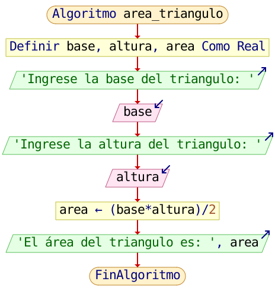
Pruebas:
Se realizan dos (2) pruebas de ejecución del código desarrollado en PSeInt, con el fin de verificar su funcionamiento y validar que los resultados obtenidos correspondan con los datos ingresados y las condiciones establecidas.
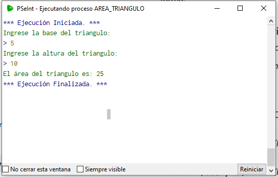
Prueba # 1.
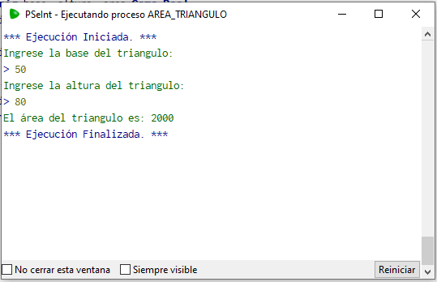
Prueba # 2.
Promedio notas.
Se desarrolla la secuencia lógica del algoritmo para calcular el promedio de notas, mediante el ingreso de las calificaciones obtenidas y la aplicación de la fórmula matemática correspondiente para determinar el resultado final.
Algoritmo promedio_notas
Definir nota1, nota2, nota3, promedio Como Real
Escribir 'Ingrese la primera nota: '
Leer nota1
Escribir 'Ingrese la segunda nota: '
Leer nota2
Escribir 'Ingrese la tercera nota: '
Leer nota3
promedio <- (nota1+nota2+nota3)/3
Escribir 'El promedio final es: ', promedio
FinAlgoritmo
Diagrama de flujo:
Se genera el diagrama de flujo del algoritmo en PSeInt, como representación gráfica de la secuencia lógica del código, sus procesos, decisiones, entradas y salidas.
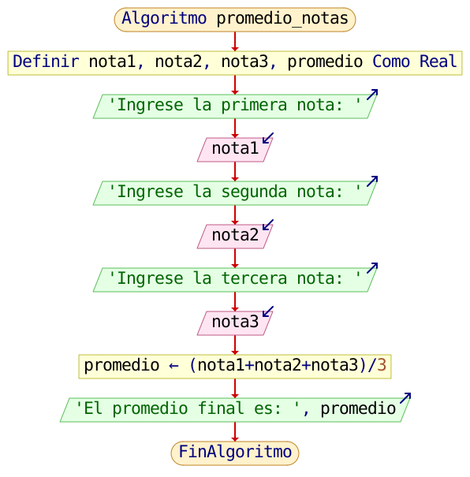
Pruebas:
Se realizan dos (2) pruebas de ejecución del código desarrollado en PSeInt, con el fin de verificar su funcionamiento y validar que los resultados obtenidos correspondan con los datos ingresados y las condiciones establecidas.
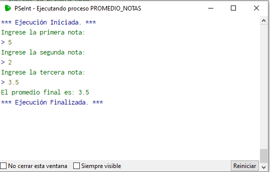
Prueba # 1.
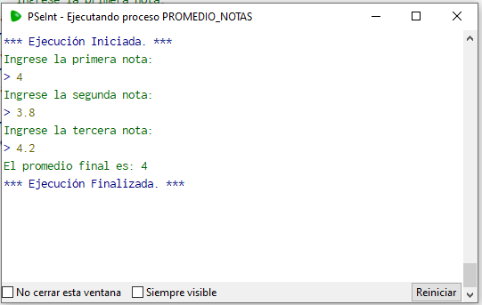
Prueba # 2.
Sueldo final.
Se desarrolla la secuencia lógica del algoritmo para calcular el sueldo final, mediante el ingreso del sueldo inicial y los descuentos correspondientes, aplicando la operación matemática de resta para obtener el valor neto a recibir.
Algoritmo sueldo_final
Definir sueldoi, descuento, sueldof Como Real
Escribir 'Ingrese el sueldo inicial: '
Leer sueldoi
descuento <- sueldoi*0.12
sueldof <- sueldoi-descuento
Escribir 'El valor del descuento (12%) es: ' , descuento
Escribir 'El sueldo neto a pagar es: ' , sueldof
FinAlgoritmo
Diagrama de flujo:
Se genera el diagrama de flujo del algoritmo en PSeInt, como representación gráfica de la secuencia lógica del código, sus procesos, decisiones, entradas y salidas.
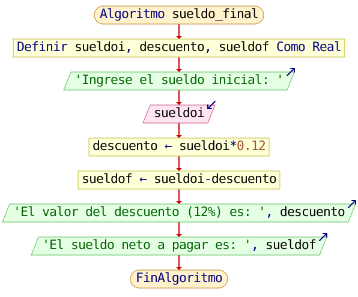
Pruebas:
Se realizan dos (2) pruebas de ejecución del código desarrollado en PSeInt, con el fin de verificar su funcionamiento y validar que los resultados obtenidos correspondan con los datos ingresados y las condiciones establecidas.
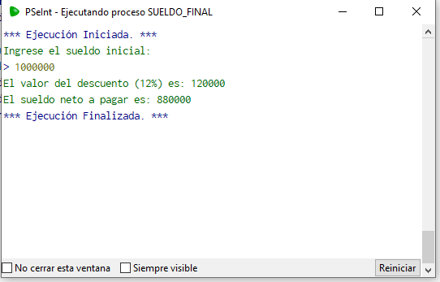
Prueba # 1.
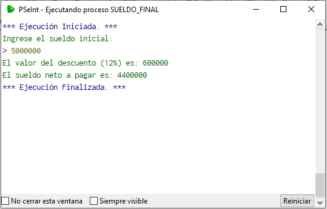
Prueba # 2.
Sumar dos números.
Se desarrolla la secuencia lógica del algoritmo para sumar dos números, mediante el ingreso de los dos valores numéricos y la aplicación de la operación matemática de adición para obtener el resultado final.
Algoritmo sumar_dos_numeros
Definir num1, num2, suma Como Entero
Escribir 'Ingrese el primer numero: '
Leer num1
Escribir 'Ingrese el segundo numero: '
Leer num2
suma <- num1+num2
Escribir 'La suma total es: ', suma
FinAlgoritmo
Diagrama de flujo:
Se genera el diagrama de flujo del algoritmo en PSeInt, como representación gráfica de la secuencia lógica del código, sus procesos, decisiones, entradas y salidas.
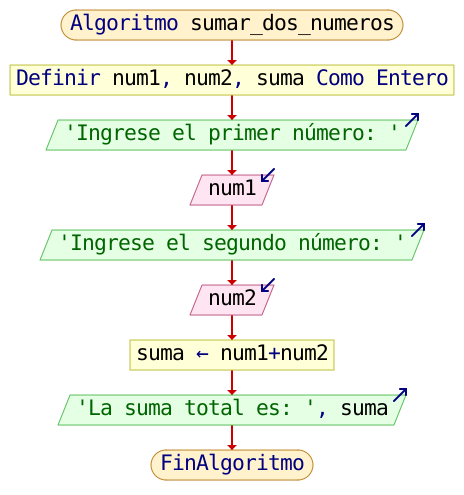
Pruebas:
Se realizan dos (2) pruebas de ejecución del código desarrollado en PSeInt, con el fin de verificar su funcionamiento y validar que los resultados obtenidos correspondan con los datos ingresados y las condiciones establecidas.
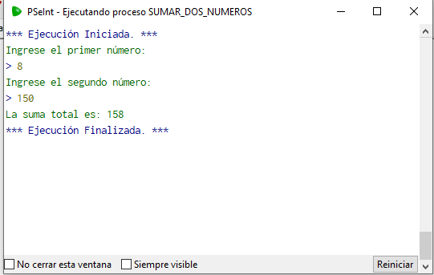
Prueba # 1.
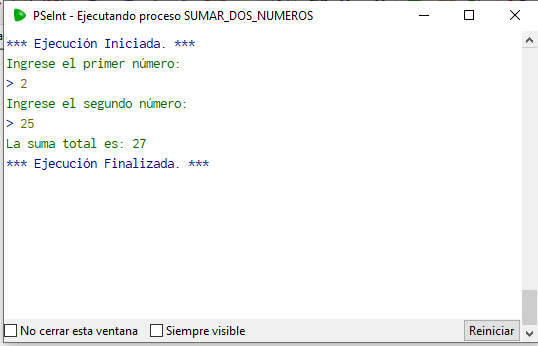
Prueba # 2.